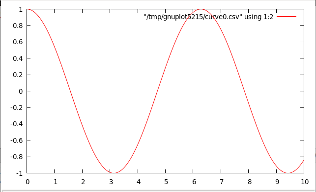
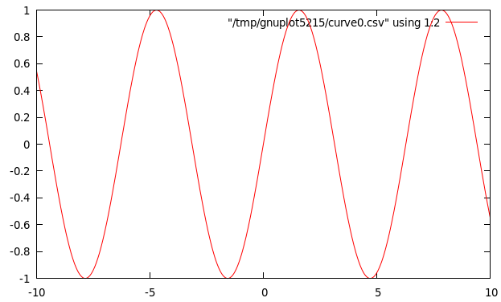
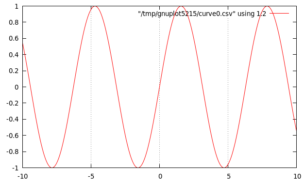
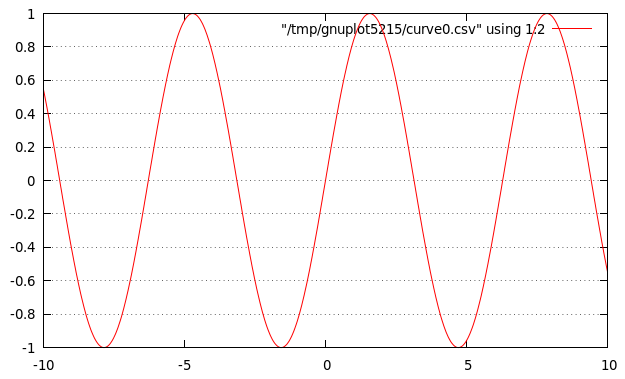
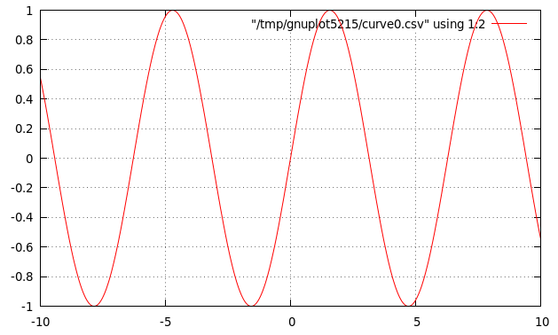
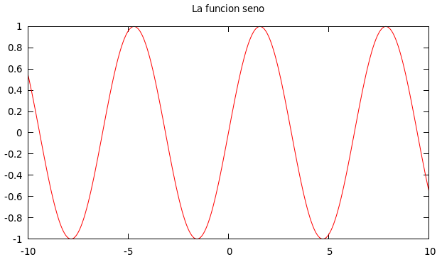
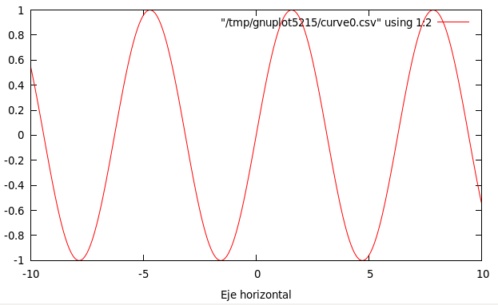
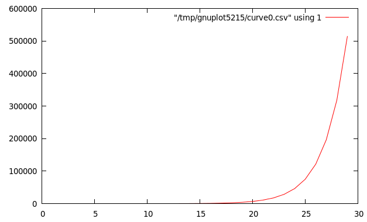
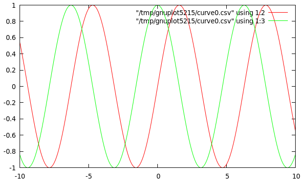
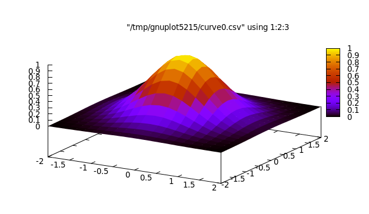

Tema 13: Programas interactivos
Índice
1 Programas interactivos
- Los programas por lote no interactúan con los usuarios durante su ejecución.
- Los programas interactivos durante su ejecución pueden leer datos del teclado y escribir resultados en la pantalla.
- Problema:
- Los programas interactivos tienen efectos laterales.
- Los programa Haskell no tiene efectos laterales.
- Ejemplo de programa interactivo
- Especificación: El programa pide una cadena y dice el número de caracteres que tiene.
Ejemplo de sesión:
λ> longitudCadena Escribe una cadena: "Hoy es lunes" La cadena tiene 14 caracteres
Programa:
longitudCadena :: IO () longitudCadena = do putStr "Escribe una cadena: " xs <- getLine putStr "La cadena tiene " putStr (show (length xs)) putStrLn " caracteres"
2 El tipo de las acciones de entrada/salida
- En Haskell se pueden escribir programas interactivos usando tipos que distingan las expresiones puras de las acciones impuras que tienen efectos laterales.
IO aes el tipo de las acciones que devuelven un valor del tipoa.- Ejemplos:
IO Chares el tipo de las acciones que devuelven un carácter.IO ()es el tipo de las acciones que no devuelven ningún valor.
La acción
getCharlee un carácter del teclado, lo muestra en la pantalla y lo devuelve como valor. Su tipo esgetChar :: IO Char
La acción
putChar cescribe el caráctercen la pantalla y no devuelve ningún valor. Su tipo esputChar :: c -> IO ()
La acción
return cdevuelve el valorcsin ninguna interacción. Su tipo esreturn :: a -> IO a
Ejemplo:
λ> putChar 'b' bλ> it ()
- Una sucesión de acciones puede combinarse en una acción compuesta mediante
expresiones
do. Ejemplo: El procedimiento
ejSecuenciacionlee dos caracteres y devuelve el par formado por ellos. Por ejemplo,λ> ejSecuenciacion b f ('b','f')Su definición es
ejSecuenciacion :: IO (Char,Char) ejSecuenciacion = do x <- getChar getChar y <- getChar return (x,y)
3 Primitivas derivadas
Lectura de cadenas del teclado:
getLine :: IO String getLine = do x <- getChar if x == '\n' then return [] else do xs <- getLine return (x:xs)
Escritura de cadenas en la pantalla:
putStr :: String -> IO () putStr [] = return () putStr (x:xs) = do putChar x putStr xs
Escritura de cadenas en la pantalla y salto de línea:
putStrLn :: String -> IO () putStrLn xs = do putStr xs putChar '\n'
Ejecución de una lista de acciones. Por ejemplo,
λ> sequence_ [putStrLn "uno", putStrLn "dos"] uno dos λ> it ()
La definición es
sequence_ :: [IO a] -> IO () sequence_ [] = return () sequence_ (a:as) = do a sequence_ as
- Ejemplo de programa con primitivas derivadas
- Especificación: El programa pide una cadena y dice el número de caracteres que tiene.
Ejemplo de sesión:
λ> longitudCadena Escribe una cadena: "Hoy es lunes" La cadena tiene 14 caracteres
Programa:
longitudCadena :: IO () longitudCadena = do putStr "Escribe una cadena: " xs <- getLine putStr "La cadena tiene " putStr (show (length xs)) putStrLn " caracteres"
4 Ejemplos de programas interactivos
4.1 Juego de adivinación interactivo
- Descripción: El programa le pide al jugador humano que piense un número entre 1 y 100 y trata de adivinar el número que ha pensado planteándole conjeturas a las que el jugador humano responde con mayor, menor o exacto según que el número pensado sea mayor, menor o igual que el número conjeturado por la máquina.
Ejemplo de sesión:
Main> juego Piensa un numero entre el 1 y el 100. Es 50? [mayor/menor/exacto] mayor Es 75? [mayor/menor/exacto] menor Es 62? [mayor/menor/exacto] mayor Es 68? [mayor/menor/exacto] exacto Fin del juego
Programa:
juego :: IO () juego = do putStrLn "Piensa un numero entre el 1 y el 100." adivina 1 100 putStrLn "Fin del juego" adivina :: Int -> Int -> IO () adivina a b = do putStr ("Es " ++ show conjetura ++ "? [mayor/menor/exacto] ") s <- getLine case s of "mayor" -> adivina (conjetura+1) b "menor" -> adivina a (conjetura-1) "exacto" -> return () _ -> adivina a b where conjetura = (a+b) `div` 2
- Descripción: En el segundo juego la máquina genera un número aleatorio entre 1 y 100 y le pide al jugador humano que adivine el número que ha pensado planteándole conjeturas a las que la máquina responde con mayor, menor o exacto según que el número pensado sea mayor, menor o igual que el número conjeturado por el jugador humano.
Ejemplo de sesión:
Main> juego2 Tienes que adivinar un numero entre 1 y 100 Escribe un numero: 50 es bajo. Escribe un numero: 75 es alto. Escribe un numero: 62 Exactamente
Se usa la librería de generación de números aleatorios:
import System.Random (randomRIO)
Programa:
juego2 :: IO () juego2 = do n <- randomRIO (1::Int,100) putStrLn "Tienes que adivinar un numero entre 1 y 100" adivina' n adivina' :: Int -> IO () adivina' n = do putStr "Escribe un numero: " c <- getLine let x = read c case (compare x n) of LT -> do putStrLn " es bajo." adivina' n GT -> do putStrLn " es alto." adivina' n EQ -> putStrLn " Exactamente"
4.2 Calculadora aritmética
Importaciones
import I1M.Analizador import System.IO
Escritura de caracteres sin eco:
getCh :: IO Char getCh = do hSetEcho stdin False c <- getChar hSetEcho stdin True return c
Limpieza de la pantalla:
limpiaPantalla :: IO () limpiaPantalla = putStr "\ESC[2J"
Escritura en una posición:
type Pos = (Int,Int) irA :: Pos -> IO () irA (x,y) = putStr ("\ESC[" ++ show y ++ ";" ++ show x ++ "H") escribeEn :: Pos -> String -> IO () escribeEn p xs = do irA p putStr xs
- En las funciones
limpiaPantallaeirAse han usado códigos de escape ANSI. Calculadora
calculadora :: IO () calculadora = do limpiaPantalla escribeCalculadora limpiar escribeCalculadora :: IO () escribeCalculadora = do limpiaPantalla sequence_ [escribeEn (1,y) xs | (y,xs) <- zip [1..13] imagenCalculadora] putStrLn "" imagenCalculadora :: [String] imagenCalculadora = ["+---------------+", "| |", "+---+---+---+---+", "| q | c | d | = |", "+---+---+---+---+", "| 1 | 2 | 3 | + |", "+---+---+---+---+", "| 4 | 5 | 6 | - |", "+---+---+---+---+", "| 7 | 8 | 9 | * |", "+---+---+---+---+", "| 0 | ( | ) | / |", "+---+---+---+---+"]
- Los primeros cuatro botones permiten escribir las órdenes:
qpara salir (quit),cpara limpiar la agenda (clear),dpara borrar un carácter (delete) y=para evaluar una expresión.
Los restantes botones permiten escribir las expresiones.
limpiar :: IO () limpiar = calc "" calc :: String -> IO () calc xs = do escribeEnPantalla xs c <- getCh if elem c botones then procesa c xs else do calc xs escribeEnPantalla xs = do escribeEn (3,2) " " escribeEn (3,2) (reverse (take 13 (reverse xs))) botones :: String botones = standard ++ extra where standard = "qcd=123+456-789*0()/" extra = "QCD \ESC\BS\DEL\n" procesa :: Char -> String -> IO () procesa c xs | elem c "qQ\ESC" = salir | elem c "dD\BS\DEL" = borrar xs | elem c "=\n" = evaluar xs | elem c "cC" = limpiar | otherwise = agregar c xs salir :: IO () salir = irA (1,14) borrar :: String -> IO () borrar "" = calc "" borrar xs = calc (init xs) evaluar :: String -> IO () evaluar xs = case analiza expr xs of [(n,"")] -> calc (show n) _ -> do calc xs agregar :: Char -> String -> IO () agregar c xs = calc (xs ++ [c])
4.3 El juego de la vida
4.3.1 Descripción del juego de la vida
- El tablero del juego de la vida es una malla formada por cuadrados ("células") que se pliega en todas las direcciones.
- Cada célula tiene 8 células vecinas, que son las que están próximas a ella, incluso en las diagonales.
- Las células tienen dos estados: están "vivas" o "muertas".
- El estado del tablero evoluciona a lo largo de unidades de tiempo discretas.
- Las transiciones dependen del número de células vecinas vivas:
- Una célula muerta con exactamente 3 células vecinas vivas "nace" (al turno siguiente estará viva).
- Una célula viva con 2 ó 3 células vecinas vivas sigue viva, en otro caso muere.
Funciones anteriores
import Data.List (nub) type Pos = (Int,Int) irA :: Pos -> IO () irA (x,y) = putStr ("\ESC[" ++ show y ++ ";" ++ show x ++ "H") escribeEn :: Pos -> String -> IO () escribeEn p xs = do irA p putStr xs limpiaPantalla:: IO () limpiaPantalla= putStr "\ESC[2J"
El tablero del juego de la vida
type Tablero = [Pos]
Dimensiones:
ancho :: Int ancho = 5 alto :: Int alto = 5
Ejemplo de tablero:
ejTablero :: Tablero ejTablero = [(2,3),(3,4),(4,2),(4,3),(4,4)]
Representación del tablero:
1234 1 2 O 3 O O 4 OO
(vida n t)simula el juego de la vida a partir del tablerotcon un tiempo entre generaciones proporcional an. Por ejemplo,vida 100000 ejTablero
vida :: Int -> Tablero -> IO () vida n t = do limpiaPantalla escribeTablero t espera n vida n (siguienteGeneracion t)
Escritura del tablero:
escribeTablero :: Tablero -> IO () escribeTablero t = sequence_ [escribeEn p "O" | p <- t]
Espera entre generaciones:
espera :: Int -> IO () espera n = sequence_ [return () | _ <- [1..n]]
siguienteGeneracion t)es el tablero de la siguiente generación al tablerot. Por ejemplo,λ> siguienteGeneracion ejTablero [(4,3),(3,4),(4,4),(3,2),(5,3)]
Su definición es
siguienteGeneracion :: Tablero -> Tablero siguienteGeneracion t = supervivientes t ++ nacimientos t
(supervivientes t)es la listas de posiciones detque sobreviven; i.e. posiciones con 2 ó 3 vecinos vivos. Por ejemplo,supervivientes ejTablero == [(4,3),(3,4),(4,4)]
Su definición es
supervivientes :: Tablero -> [Pos] supervivientes t = [p | p <- t, elem (nVecinosVivos t p) [2,3]]
(nVecinosVivos t c)es el número de vecinos vivos de la célulacen el tablerot. Por ejemplo,nVecinosVivos ejTablero (3,3) == 5 nVecinosVivos ejTablero (3,4) == 3
Su definición es
nVecinosVivos :: Tablero -> Pos -> Int nVecinosVivos t = length . filter (tieneVida t) . vecinos
(vecinos p)es la lista de los vecinos de la célula en la posiciónp. Por ejemplo,vecinos (2,3) == [(1,2),(2,2),(3,2),(1,3),(3,3),(1,4),(2,4),(3,4)] vecinos (1,2) == [(5,1),(1,1),(2,1),(5,2),(2,2),(5,3),(1,3),(2,3)] vecinos (5,2) == [(4,1),(5,1),(1,1),(4,2),(1,2),(4,3),(5,3),(1,3)] vecinos (2,1) == [(1,5),(2,5),(3,5),(1,1),(3,1),(1,2),(2,2),(3,2)] vecinos (2,5) == [(1,4),(2,4),(3,4),(1,5),(3,5),(1,1),(2,1),(3,1)] vecinos (1,1) == [(5,5),(1,5),(2,5),(5,1),(2,1),(5,2),(1,2),(2,2)] vecinos (5,5) == [(4,4),(5,4),(1,4),(4,5),(1,5),(4,1),(5,1),(1,1)]
Su definición es
vecinos :: Pos -> [Pos] vecinos (x,y) = map modular [(x-1,y-1), (x,y-1), (x+1,y-1), (x-1,y), (x+1,y), (x-1,y+1), (x,y+1), (x+1,y+1)]
(modular p)es la posición correspondiente apen el tablero considerando los plegados. Por ejemplo,modular (6,3) == (1,3) modular (0,3) == (5,3) modular (3,6) == (3,1) modular (3,0) == (3,5)
Su definición es
modular :: Pos -> Pos modular (x,y) = (1 + (x-1) `mod` ancho, 1 + (y-1) `mod` alto)
(tieneVida t p)se verifica si la posiciónpdel tablerottiene vida. Por ejemplo,tieneVida ejTablero (1,1) == False tieneVida ejTablero (2,3) == True
Su definición es
tieneVida :: Tablero -> Pos -> Bool tieneVida t p = elem p t
(noTieneVida t p)se verifica si la posiciónpdel tablerotno tiene vida. Por ejemplo,noTieneVida ejTablero (1,1) == True noTieneVida ejTablero (2,3) == False
Su definición es
noTieneVida :: Tablero -> Pos -> Bool noTieneVida t p = not (tieneVida t p)
(nacimientos t)es la lista de los nacimientos de tablerot; i.e. las posiciones sin vida con 3 vecinos vivos. Por ejemplo,nacimientos ejTablero == [(3,2),(5,3)]
Su definición es
nacimientos' :: Tablero -> [Pos] nacimientos' t = [(x,y) | x <- [1..ancho], y <- [1..alto], noTieneVida t (x,y), nVecinosVivos t (x,y) == 3]
Definición más eficiente de
nacimientosnacimientos :: Tablero -> [Pos] nacimientos t = [p | p <- nub (concatMap vecinos t), noTieneVida t p, nVecinosVivos t p == 3]
5 Representación gráfica de funciones con gnuplot
5.1 Instalación de programas
- Se necesita el programa gnuplot cuya página de descarga se encuentra aquí.
Se necesita la librería gnuplot de Haskell que se instala con
cabal install gnuplot
5.2 Uso de gnuplot
Para usar la librería gnuplot hay que escribir al principio del fichero
import Graphics.Gnuplot.Simple
5.3 Representación de funciones con plotFunc
Representación de la función coseno 
Su definición esdib0 :: IO () dib0 = plotFunc [] [0,0.01..10 :: Double] cos
5.4 Rango lineal
- (xRango n (a,b)) es la lista de los puntos obtenidos al dividir el
segmento (a,b) en n partes iguales. Por ejemplo,
xRango 5 (0,10) == [0.0,2.0,4.0,6.0,8.0,10.0]
Su definición es
rango :: Integer -> (Double,Double) -> [Double] rango n i = linearScale n i
5.5 Atributos de los gráficos
Dibuja la gráfica de la función seno en el fichero ej.eps  Su definición es
dib1a = plotFunc [EPS "ej.eps"] (xRango 500 (-10,10)) sin
Dibuja la gráfica de la función seno con retícula vertical 
Su definición esdib1b = plotFunc [Grid (Just ["x"])] (xRango 500 (-10,10)) sin
Dibuja la gráfica de la función seno con retícula horizontal 
Su definición esdib1c = plotFunc [Grid (Just ["y"])] (xRango 500 (-10,10)) sin
Dibuja la gráfica de la función seno con retícula horizontal y vertical 
Su definición esdib1d = plotFunc [Grid (Just [])] (xRango 500 (-10,10)) sin
Dibuja la gráfica de la función seno con título y sin etiqueta 
Su definición esdib1e = plotFunc [Title "La funcion seno", Key Nothing] (xRango 1000 (-10,10)) sin
Dibuja la gráfica de la función seno con una etiqueta en el eje X 
Su definición esdib1f = plotFunc [XLabel "Eje horizontal"] (xRango 1000 (-10,10)) sin
5.6 Dibujo de listas de puntos con plotList
Dibuja los 30 primeros términos de la sucesión de Fibonacci: 
Su definición esdib2 = plotList [] (take 30 fibs) where fibs :: [Double] fibs = 0 : 1 : zipWith (+) fibs (tail fibs)
5.7 Gráficas conjuntas
Dibuja la gráfica de las funciones seno y coseno: 
Su definición esdib3 = plotFuncs [] (xRango 1000 (-10,10)) [sin, cos]
5.8 Gráfico de curvas paramétricas
Dibuja una función definida en forma paramétrica:

Su definición esdib4 = plotParamFunc [Key Nothing] (xRango 1000 (0,2*pi)) (\t -> (12*sin(t)-4*sin(3*t), 13*cos(t)-5*cos(2*t)-2*cos(3*t)-cos(4*t)))
5.9 Representación de superficies con plotFunc3d
Ejemplo: 
Su definición esdib5 = plotFunc3d [] [] xs xs (\x y -> exp(-(x*x+y*y))) where xs = [-2,-1.8..2::Double]
6 Manejo de ficheros
6.1 Lectura de ficheros con readFile
Supongamos que el fichero
Ejemplo_1.txttiene el siguiente contenidoEste fichero tiene tres lineas esta es la segunda y esta es la tercera.
El procedimiento de lectura de ficheros:
λ> :type readFile readFile :: FilePath -> IO String λ> readFile "Ejemplo_1.txt" "Este fichero tiene tres lineas\nesta es la segunda y\nesta es la tercera.\n" λ> putStrLn it Este fichero tiene tres lineas esta es la segunda y esta es la tercera. λ> cs <- readFile "Ejemplo_1.txt" λ> putStrLn cs Este fichero tiene tres lineas esta es la segunda y esta es la tercera.
El procedimiento
(muestraContenidoFichero f)muestra en pantalla el contenido del ficherof. Por ejemplo,λ> muestraContenidoFichero "Ejemplo_1.txt" Este fichero tiene tres lineas esta es la segunda y esta es la tercera.
El programa es
muestraContenidoFichero :: FilePath -> IO () muestraContenidoFichero f = do cs <- readFile f putStrLn cs
6.2 Escritura en ficheros con writeFile
El procedimiento de escritura de ficheros:
λ> :type writeFile writeFile :: FilePath -> String -> IO () λ> let texto = "Hay\ntres lineas\nde texto" λ> writeFile "Ejemplo_2.txt" texto λ> muestraContenidoFichero "Ejemplo_2.txt" Hay tres lineas de texto
El procedimiento
(aMayucula f1 f2)lee el contenido del fichero f1 y escribe su contenido en mayúscula en el fichero f2. Por ejemplo,λ> muestraContenidoFichero "Ejemplo_1.txt" Este fichero tiene tres lineas esta es la segunda y esta es la tercera. λ> aMayuscula "Ejemplo_1.txt" "Ejemplo_3.txt" λ> muestraContenidoFichero "Ejemplo_3.txt" ESTE FICHERO TIENE TRES LINEAS ESTA ES LA SEGUNDA Y ESTA ES LA TERCERA.
El programa es
import Data.Char (toUpper) aMayuscula f1 f2 = do contenido <- readFile f1 writeFile f2 (map toUpper contenido)
El procedimiento
(ordenaFichero f1 f2)lee el contenido del fichero f1 y escribe su contenido ordenado en el fichero f2. Por ejemplo,λ> muestraContenidoFichero "Ejemplo_4a.txt" Juan Ramos Ana Ruiz Luis Garcia Blanca Perez λ> ordenaFichero "Ejemplo_4a.txt" "Ejemplo_4b.txt" λ> muestraContenidoFichero "Ejemplo_4b.txt" Ana Ruiz Blanca Perez Juan Ramos Luis Garcia
El programa es
import Data.List (sort) ordenaFichero :: FilePath -> FilePath -> IO () ordenaFichero f1 f2 = do cs <- readFile f1 writeFile f2 ((unlines . sort . lines) cs)
Las funciones
linesyunlinesλ> :type lines lines :: String -> [String] λ> :type unlines unlines :: [String] -> String λ> unlines ["ayer fue martes", "hoy es miercoles","de enero"] "ayer fue martes\nhoy es miercoles\nde enero\n" λ> lines it ["ayer fue martes","hoy es miercoles","de enero"]
Las funciones
wordsyunwordsλ> :type words words :: String -> [String] λ> :type unwords unwords :: [String] -> String λ> words "ayer fue martes" ["ayer","fue","martes"] λ> unwords it "ayer fue martes"
El procedimiento
(tablaCuadrados f n)escribe en el ficheroflos cuadrados de losnprimeros números. Por ejemplo.λ> tablaCuadrados "cuadrados.txt" 9 λ> muestraContenidoFichero "cuadrados.txt" (1,1) (2,4) (3,9) (4,16) (5,25) (6,36) (7,49) (8,64) (9,81)
El programa es
tablaCuadrados :: FilePath -> Int -> IO () tablaCuadrados f n = writeFile f (listaDeCuadrados n) listaDeCuadrados :: Int -> String listaDeCuadrados n = unwords (map show [(x,x*x) | x <- [1..n]])
El procedimiento (tablaCuadrados2 f n) escribe en el fichero f los cuadrados de los n primeros números, uno por línea. Por ejemplo.
λ> tablaCuadrados2 "cuadrados.txt" 5 λ> muestraContenidoFichero "cuadrados.txt" (1,1) (2,4) (3,9) (4,16) (5,25)
El programa es
tablaCuadrados2 :: FilePath -> Int -> IO () tablaCuadrados2 f n = writeFile f (listaDeCuadrados2 n) listaDeCuadrados2 :: Int -> String listaDeCuadrados2 n = unlines (map show [(x,x*x) | x <- [1..n]])
El procedimiento (tablaLogaritmos f ns) escribe en el fichero f los cuadrados de los números de ns, uno por línea. Por ejemplo.
λ> tablaLogaritmos "z.txt" [1,3..20] λ> muestraContenidoFichero "z.txt" +----+----------------+ | n | log(n) | +----+----------------+ | 1 | 0.000000000000 | | 3 | 1.098612288668 | | 5 | 1.609437912434 | | 7 | 1.945910149055 | | 9 | 2.197224577336 | | 11 | 2.397895272798 | | 13 | 2.564949357462 | | 15 | 2.708050201102 | | 17 | 2.833213344056 | | 19 | 2.944438979166 | +----+----------------+
El programa es
import Text.Printf tablaLogaritmos :: FilePath -> [Int] -> IO () tablaLogaritmos f ns = do writeFile f (tablaLogaritmosAux ns) tablaLogaritmosAux :: [Int] -> String tablaLogaritmosAux ns = linea ++ cabecera ++ linea ++ concat [printf "| %2d | %.12f |\n" n x | n <- ns , let x = log (fromIntegral n) :: Double] ++ linea linea, cabecera :: String linea = "+----+----------------+\n" cabecera = "| n | log(n) |\n"
7 Bibliografía
- J.A. Alonso. Gráficas con GNUplot en IHaskell.
- H. Daumé III. Yet another Haskell tutorial, 2006.
- Cap. 5: Basic Input/Output.
- G. Hutton. Programming in Haskell. Cambridge University Press, 2007.
- Cap. 9: Interactive programs.
- M. Lipovača ¡Aprende Haskell por el bien de todos!
- Cap. 9.2: Ficheros y flujos de datos.
- B. O’Sullivan, J. Goerzen y D. Stewart. Real World Haskell. O'Reilly, 2009.
- Cap. 7: I/O.
- B.C. Ruiz, F. Gutiérrez, P. Guerrero y J.E. Gallardo. Razonando con Haskell. Thompson, 2004.
- Cap. 7: Entrada y salida.
- S. Thompson. Haskell: The Craft of Functional Programming, Second Edition. Addison-Wesley, 1999.
- Cap. 18: Programming with actions.
- Wikipedia ANSI escape code.
- Graphics.Gnuplot.Simple.
- Game of life implemented in Haskell.
- The game of life (Animación).